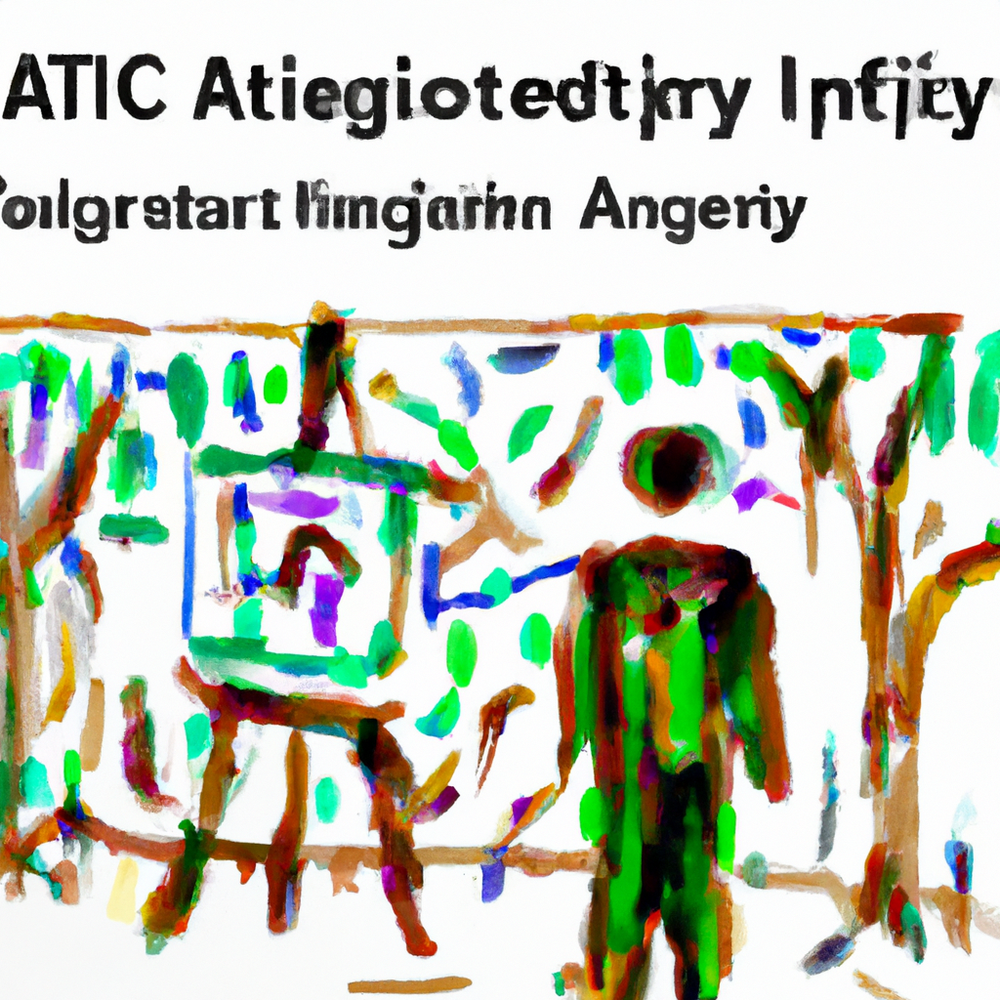

The future of AI-based psychometrics
As technology advances, so does the field of psychometrics. AI-based psychometrics is a rapidly growing area of research that uses artificial intelligence to measure and analyze personality traits, cognitive abilities, and other psychological factors. This technology has the potential to revolutionize the way we assess individuals, as it offers a more accurate and efficient way to measure psychological traits.
AI-based psychometrics uses machine learning algorithms to identify patterns in data that can be used to accurately assess an individual’s psychological profile. By analyzing large amounts of data, AI-based psychometrics can detect subtle differences in behavior and thought processes that would otherwise be difficult to measure manually. This technology can also be used to provide personalized feedback for individuals, helping them better understand their own strengths and weaknesses.
AI-based psychometrics can also be used to detect mental health issues such as depression or anxiety. Machine learning algorithms can identify patterns in behavior that indicate the presence of such issues, allowing for earlier diagnosis and treatment. In addition, AI-based psychometrics can be used to monitor an individual’s progress over time, helping clinicians track changes in behavior and thought processes as treatments are administered.
The potential applications of AI-based psychometrics are vast, and the technology is still in its early stages. As it continues to develop, AI-based psychometric assessments will become increasingly accurate and reliable. This will allow for more personalized feedback and treatment plans for individuals, as well as more effective mental health interventions overall. The future of AI-based psychometrics looks bright indeed!